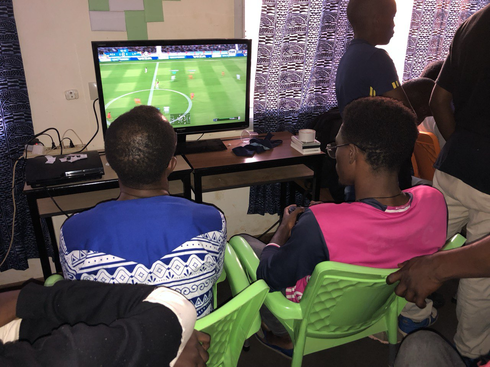
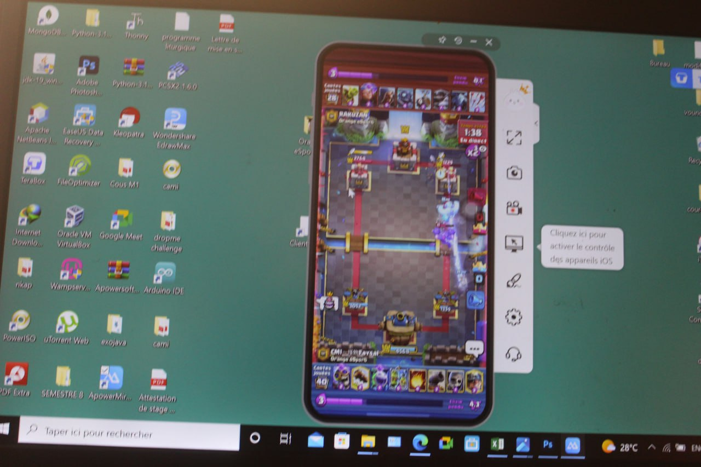
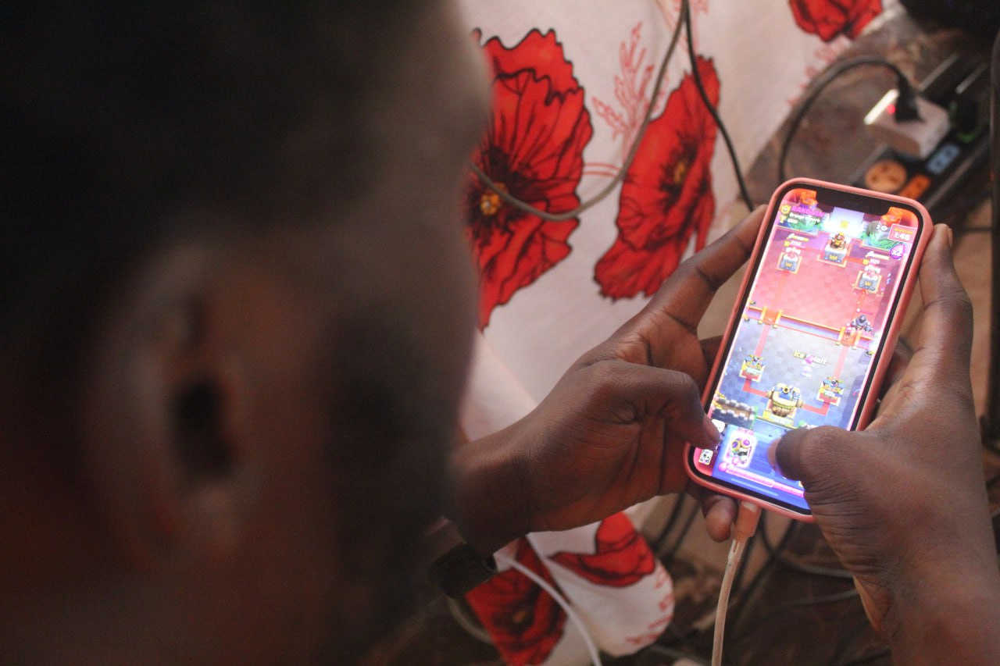
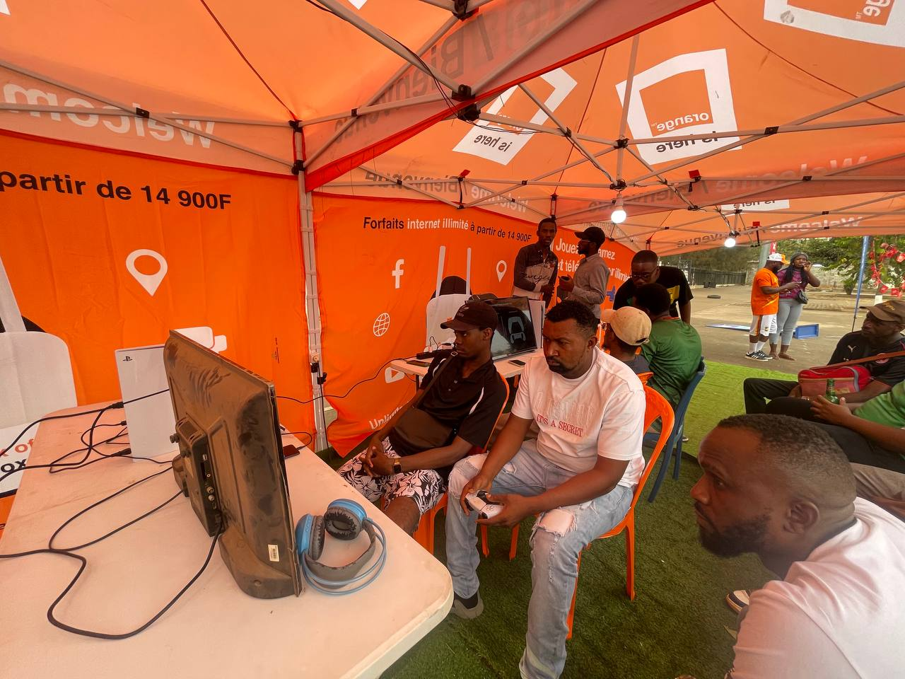
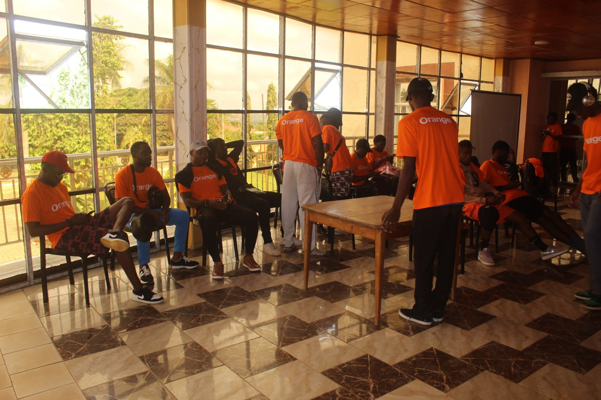
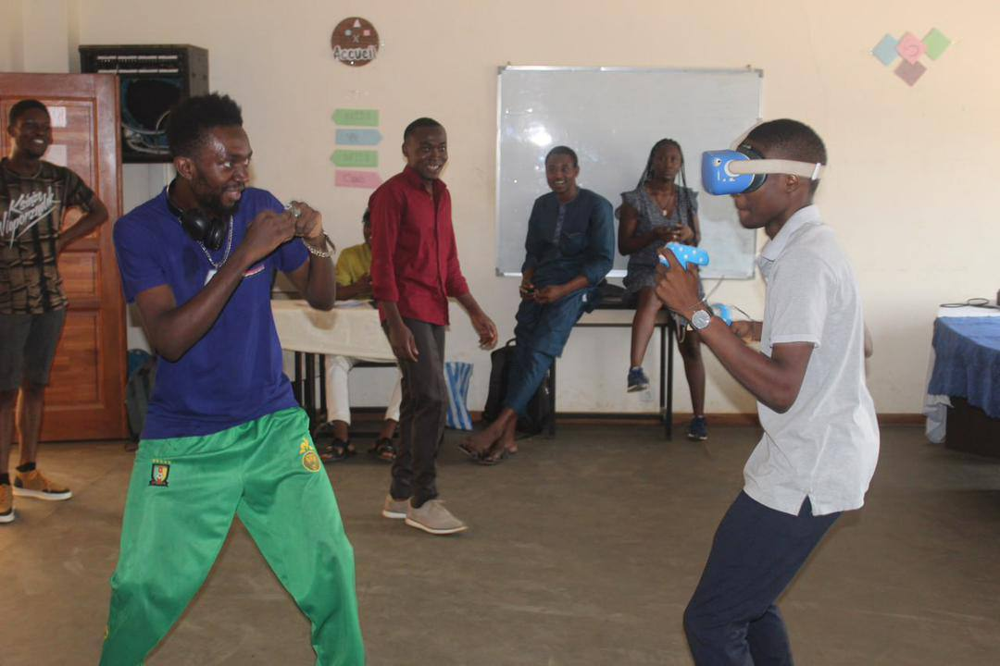

Le jeu vidéo n'est plus seulement un loisir au Cameroun. Il devient progressivement un espace de compétition, de création, de sociabilité et d'entrepreneuriat. Pourtant, entre la passion d'une génération connectée et la réalité économique d'un marché encore jeune, une question demeure : le Cameroun peut-il transformer sa communauté de gamers en une véritable industrie de l'e-sport ?
1. Le Cameroun joue déjà
Parler de l'avenir de l'e-sport au Cameroun suppose d'abord de reconnaître une réalité : le gaming existe déjà dans les usages quotidiens. Le développement du smartphone, des réseaux mobiles et des plateformes sociales a élargi l'accès au jeu vidéo bien au-delà des joueurs disposant d'un PC ou d'une console haut de gamme.
Cette évolution est particulièrement importante dans un pays où l'accès au matériel informatique reste coûteux pour une grande partie de la population. Le mobile devient donc une porte d'entrée majeure vers le jeu vidéo. Des titres compétitifs, notamment les jeux de football, de combat, de tir et les jeux mobiles multijoueurs, permettent à des communautés de se former sans disposer nécessairement d'une infrastructure comparable à celle des grands marchés occidentaux ou asiatiques.

Les chiffres du numérique donnent une idée du potentiel. Les données de DataReportal font état d'environ 12,4 millions d'internautes au Cameroun en 2025, tandis que le pays comptait des dizaines de millions de connexions mobiles. Pour l'e-sport, cette transformation est essentielle : le prochain grand joueur camerounais peut découvrir son jeu sur un smartphone avant même d'avoir accès à une console ou à un ordinateur gaming.

2. Du gamer à l'e-sportif : une scène compétitive qui se structure
Il faut cependant distinguer gaming et e-sport. Jouer à un jeu vidéo est une activité de loisir. L'e-sport implique une pratique compétitive structurée : règles, entraînement, tournois, équipes, classements, arbitres, organisateurs, sponsors et parfois des revenus.
Au Cameroun, cette professionnalisation reste récente mais elle est visible. Des associations, collectifs et entreprises organisent des tournois, développent des communautés et cherchent à créer des plateformes capables de suivre les joueurs et les compétitions.
Cameroon Esports fait partie de cette dynamique. Créée autour de l'ambition de fédérer les gamers et de développer la pratique compétitive, la structure a notamment porté des actions de sensibilisation, des tournois et des activités communautaires. D'autres acteurs comme Beyonders Esports et House Game ont également contribué à la mise en place de compétitions et de formats plus réguliers.

3. Ces jeunes qui construisent l'e-sport au Cameroun
Derrière les compétitions et les chiffres, il y a surtout des jeunes qui décident de consacrer leur temps, leur énergie et parfois leurs propres moyens à faire grandir la culture gaming. Ils organisent des tournois, créent des communautés, forment de nouveaux joueurs et cherchent à donner une place au jeu vidéo dans des villes parfois éloignées des grands centres.
L'exemple de Smash Gaming à Sangmélima est particulièrement parlant. Lancée en 2023 par de jeunes passionnés, la structure s'est donné pour ambition de développer l'e-sport dans la région du Sud et de créer des opportunités pour des talents locaux qui manquaient de visibilité, de structure et d'encadrement.

Ce type d'initiative est essentiel. Le développement de l'e-sport ne se fera pas uniquement depuis Yaoundé ou Douala. Il doit aussi se construire dans les villes secondaires et les territoires où des jeunes disposent de talents mais de moins d'opportunités.
4. Une étape institutionnelle importante
L'un des changements majeurs est la volonté de donner à l'e-sport une organisation institutionnelle. La création de la Fédération Camerounaise des Sports Électroniques (FECASES), à travers son assemblée générale constitutive en septembre 2025, constitue une étape importante dans cette évolution.
La structuration institutionnelle ne résout évidemment pas toutes les difficultés. Elle permet néanmoins d'ouvrir des discussions sur les règles, la représentation des joueurs, la formation, l'organisation des compétitions, les relations avec les partenaires et la reconnaissance de l'e-sport dans le paysage sportif camerounais.
Le défi sera désormais de faire coexister efficacement les initiatives associatives, les entreprises privées, les organisateurs indépendants, les joueurs, les créateurs de contenu et les structures fédérales. L'écosystème ne progressera réellement que si ces acteurs parviennent à travailler de manière complémentaire.
5. Le nerf de la guerre : l'argent
Le potentiel communautaire ne suffit pas à créer une industrie. Pour qu'un écosystème e-sport durable apparaisse, il faut de l'argent : sponsoring, publicité, partenariats, billetterie, droits médias, création de contenu, merchandising, services et revenus directs ou indirects pour les joueurs.
C'est probablement l'un des principaux défis du Cameroun. Les cash prizes peuvent attirer les joueurs, mais ils ne constituent pas à eux seuls un modèle économique. Un joueur ne devient pas professionnel simplement parce qu'un tournoi offre une récompense.

Le rôle des entreprises de télécommunication peut être déterminant. Les opérateurs possèdent déjà une partie des infrastructures, des moyens marketing et des communautés susceptibles de soutenir des compétitions. MTN Game Zone illustre l'intérêt croissant des télécommunications pour les usages gaming et la capacité d'une marque à transformer le jeu vidéo en événement grand public.

6. Le problème de l'infrastructure
On ne peut pas parler sérieusement d'e-sport au Cameroun sans parler de connectivité. Un jeu compétitif en ligne exige une connexion stable, une latence faible et une infrastructure suffisamment fiable. Or, le coût de la data, la qualité variable des réseaux, les coupures d'électricité et le prix du matériel restent des obstacles.
La situation numérique s'améliore néanmoins. L'ART rapportait en 2024 plus de 15 millions d'abonnements Internet et une très forte domination de l'accès mobile. Ces tendances sont favorables au gaming, mais elles doivent encore être accompagnées par une amélioration de la qualité et de l'accessibilité des infrastructures.
7. Les femmes et la diversité des communautés
La construction d'un véritable écosystème passe également par une meilleure inclusion des femmes et des communautés aujourd'hui moins visibles. Les initiatives dédiées au gaming féminin montrent qu'il existe une demande pour des espaces de compétition et de rencontre plus inclusifs.
L'objectif ne devrait pas être uniquement d'augmenter le nombre de joueurs, mais de permettre à chacun de trouver une place dans la chaîne de valeur :
8. L'e-sport crée bien plus que des joueurs
C'est probablement l'une des idées les plus importantes à retenir. Lorsqu'on parle d'e-sport, on pense souvent aux joueurs professionnels et aux cash prizes. Pourtant, une industrie du jeu vidéo crée de nombreux autres métiers.
Pour un pays comme le Cameroun, cette dimension est essentielle. Le développement de l'e-sport peut devenir une porte d'entrée vers les métiers du numérique et de la création. Il peut également favoriser l'entrepreneuriat et l'émergence de compétences exportables.
9. Du joueur au créateur
L'autre grand enjeu est de ne pas considérer le Cameroun uniquement comme un marché de consommateurs de jeux étrangers. Le pays possède également des talents capables de créer.
Kiro'o Games constitue l'exemple emblématique. Avec Aurion : l'Héritage des Kori-Odan, le studio camerounais a démontré qu'une création vidéoludique africaine pouvait viser un marché international. La mise en avant du studio dans l'écosystème Xbox a également montré la possibilité pour un acteur camerounais de se connecter à l'industrie mondiale.
Cette dimension ouvre une perspective beaucoup plus large : demain, le Cameroun pourrait ne pas seulement organiser des compétitions sur des jeux conçus ailleurs. Il pourrait aussi développer ses propres jeux, personnages, univers et propriétés intellectuelles.
10. Le phygital : une nouvelle frontière ?
L'évolution récente du secteur montre également l'apparition de nouveaux formats. Le phygital cherche à rapprocher compétition numérique et performance physique. Des événements combinant jeux vidéo, football virtuel, danse ou autres disciplines peuvent ainsi toucher un public plus large.

Cette approche pourrait être intéressante pour le Cameroun, car elle rapproche le gaming de la culture sportive traditionnelle. Elle peut également faciliter la compréhension de l'e-sport par le grand public et par les partenaires institutionnels.
11. Alors, quel avenir pour l'e-sport au Cameroun ?
L'e-sport camerounais a déjà franchi plusieurs étapes : création de communautés, multiplication des tournois, arrivée de partenaires privés, développement de plateformes, structuration associative et émergence d'une organisation fédérale.
Mais il reste encore un long chemin avant de parler d'une véritable industrie mature. Le Cameroun devra améliorer l'accès au matériel, la qualité des connexions, la formation, la rémunération des acteurs et surtout la capacité des événements à devenir économiquement viables.
Le modèle camerounais ne devra pas nécessairement copier celui de la Corée du Sud, de la France ou des États-Unis. Le pays peut au contraire construire un modèle adapté à ses réalités : mobile-first, communautaire, panafricain et connecté aux industries créatives.
Jouer, créer, monétiser.
L'avenir de l'e-sport au Cameroun dépendra moins de la capacité à organiser un grand tournoi que de la capacité à construire un écosystème durable autour du jeu vidéo.
Le véritable objectif ne devrait donc pas être simplement de savoir combien de Camerounais jouent aux jeux vidéo. Il devrait être de savoir combien de valeur économique, culturelle et professionnelle le Cameroun peut créer grâce au gaming.
L'e-sport camerounais n'en est probablement qu'au début de son histoire.
- DataReportal — Digital 2025 : Cameroon
- Autorité de Régulation des Télécommunications (ART Cameroun) — Observatoire 2024
- IESF — Cameroon, informations sur Cameroon Esports
- MTN Cameroon — MTN Game Zone
- Xbox / ID@Xbox — Kiro'o Games et Aurion
- Journal L'Étudiant, « Smash gaming : l'E-sport, un tremplin pour de jeunes talents », nov. 2025
- Cameroon Tribune, « Entrepreneuriat : Sangmelima, carrefour du numérique », oct. 2023